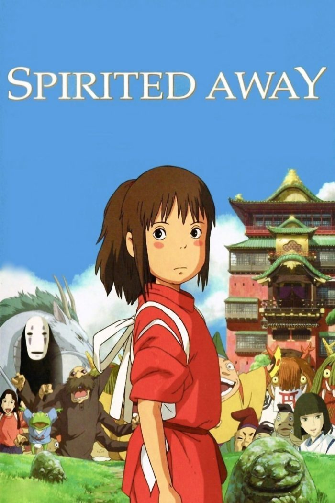

Популярное


Популярное
Гарантированная доставка по всей России.
Большой ассортимент.
Бесплатная доставка при заказе от 2999р!


Вы не поверите, сегодня я там побываала......
| С давних времён человечество ведёт свою борьбу с титанами. Титаны — это огромные существа, ростом с многоэтажный дом, которые не обладают большим интеллектом, но сила их просто ужасна. Они едят людей и получают от этого удовольствие. После продолжительной борьбы остатки человечества создали стену, окружившую мир людей, через которую не пройдут даже титаны. С тех пор прошло сто лет. Человечество мирно живёт под защитой стены. Но в один день мальчик Эрен и его приёмная сестра Микаса становятся свидетелями страшного события: участок стены был разрушен супертитаном, появившимся прямо из воздуха. Титаны атакуют город, и двое детей в ужасе видят, как один из монстров заживо съедает их мать. Брат и сестра выживают, и Эрен клянётся, что убьёт всех титанов и отомстит за всё человечество! |
|  | Восемнадцатилетняя шляпница Софи ведёт тихую и ничем не примечательную городскую жизнь. Однако типичный её распорядок рушится, когда в окрестностях города объявляется Ходячий замок Хаула — колдуна, заключившего сделку с демоном огня Кальцифером и носящего дурную славу «похитителя» девичьих сердец. Вечером после работы очаровательный голубоглазый красавец, оказавшийся, как ни странно, самим Хаулом, спасает Софи от приставаний двух солдафонов, и девушка тут же влюбляется в своего спасителя. Однако итогом их встречи становится проклятие Ведьмы Пустоши, превратившее Софи в девяностолетнюю старуху. Теперь Софи вынуждена покинуть родной дом и отправиться на поиски ведьмы, просить ту снять проклятие. Дорога же приводит «девушку» к тому самому Ходячему замку, где у неё и появляется шанс начать новую жизнь... |
Долгое время Хината Сё не мог определиться с выбором спортивного кружка, но однажды мальчишка увидел турнир по волейболу. В этом состязании принимал участие "Маленький гигант", который выступал за школу Карасуно. Хината был поражён игрой низкорослого игрока, а потому школьник решил заниматься волейболом. Вот только в средней школе не было кружка по этому виду спорта, и рыжеволосый парень начал тренироваться самостоятельно. Многое у мальчишки не получалось, но желание стать лучшим волейболистом сотворило чудо. Вскоре парень попал на отборочный турнир, где принимали участие ученики средних школ. На этих соревнованиях Сё повстречал Кагеяму Тобио, которого все звали "Королём площадки". Оказалось, что команда Хинаты состояла из друзей, которые слабовато играют в волейбол. Очередным препятствиям стало то, что первый матч необходимо было сыграть с фаворитами турнира. Во время игры Сё показал себя во всей красе, ведь он сумел честно заработать важные очки для команды, но всё же ребята проиграли. После поражения Хината начал ещё больше тренироваться, ведь впереди юношу ожидает поступление в старшую школу Карасуно, где состоится судьбоносная встреча с Тобио. | |
Юри Кацуки один из самых талантливых фигуристов своего поколения в Японии. Все удивляются его таланту, ведь парень очень трудолюбив и тренируется до изнеможения. Впереди у него большие соревнования, которые очень важны для карьеры Юри, и многие возлагают на него большие надежды. К огромному разочарованию всей страны, наш герой проваливается на соревновании, и решает поставить на своей карьере фигуриста крест. Он полностью подавлен и больше не надеется начать тренировки. Теперь он восстанавливает свои силы, хотя где-то в глубине души надеется исполнить свою мечту, хотя и не представляет с чего начать. В себя Юри Кацуки приходит только после того, как знакомится с Виктором Никифоровым – в прошлом великим фигуристом, а сейчас не менее успешным тренером. Он то и наставляет нашего героя на правильный путь и помогает ему прийти в себя. Теперь Юри знакомится с подопечным Никифорова, которого также зовут Юрий. Вместе со своим новым русским знакомым, Юри приступает к тренировкам и готов снова достичь самых высоких целей | |
| В мире «Boku no Hero Academia» каждый желающий может стать супергероем, ведь люди сразу рождаются с необычной силой, называемой Причуда. Каждый, кроме Мидории - паренька, мечтающего стать супергероем, возможно, больше многих других, но по несчастливой случайности родившегося без Причуды. И, как обычно это бывает в аниме, всё снова решает случай: самый известный и сильный супергерой в мире по прозвищу Всемогущий берётся тренировать Мидорию, после чего отдаёт ему часть своей силы, чтобы он осуществил свою мечту - поступил в академию супергероев. На волне популярности «Ванпанчмена» и супергеройских фильмов «Моя Геройская Академия» пришлась по вкусу многим за счёт красочного исполнения и зрелищных битв, ну и, само собой, персонажей - неутомимых героев… точнее, супергероев современности! |
Многие авантюристы наслышаны о существовании великой башни Бога, но мало кто из них осмеливался разыскать и забраться в неё. Каждому известно, что под этим мистическим построением находится дьявольская ловушка, которая похожа на тюрьму. Вот только никто не знает, что в этой ловушке долгое время живёт необычный парень по имени Баам. Парнишка свыкся со своим заключением, и он не помнит, как и когда попал в это жуткое место. За долгое время пребывания в тюрьме Баам мог бы сойти с ума от одиночества, но у него была подруга Рейчел. Вместе ребята научились преодолевать не только скуку, но и нашли способ, как выбраться из заточения. Вот только Баам не хотел покидать ловушку, ведь путь на свободу лежал через башню Бога, но преодолеть её не удавалось ещё никому. В один прекрасный день парнишка обнаружил пропажу Рейчел и он понял, что подруга отправилась в башню. Легенды гласят, что тот, кто доберётся до верхушки мистической башни, получит великую награду. У Баам не было другого выхода, кроме как пойти на поиски Рейчел, ведь девчонка находится в большой опасности.В фэнтезийном мире существует много загадок и опасных врагов, а потому бесстрашному парню придётся нелегко в башне. Обо всех похождениях мальчишки можно узнать, если смотреть аниме "Kami no Tou". |